| 日付 | 2015年6月6日（土） |
|---|---|
| 山域 | 高尾周辺 |
| メンバー | 家族（妻、長女・4歳、長男・1歳） |
| 山行形態 | 子連れ日帰り |
| アクセス | 車 |
| ルート (Map) | 鎌沢県立駐車場 (8:39) - (9:19) 登山口 - (10:34) 甘草水 - (11:02) 生藤山 (11:42) - (11:49) 三国山 - (13:45) 鎌沢県立駐車場 |
長い間山に行ってなかったため、本日は曇り空だが山に行くことにする。
気軽に行ける山が良いということで、近場の山を探してみるが、手頃な山は案外少ない。
近場で駐車場のある山は少なく、マイナーな山は藪が、丹沢はヤマビルが酷いため行けない。
今回は数少ない駐車場のある山、生藤山に行くことにする。通算4度目の生藤山だ。
鎌沢県立駐車場に到着。標高400m。
こんな山奥の人の少なそうな場所に県立駐車場があるとは不思議だ。
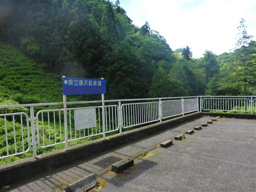
ユキノシタの花が咲いている。
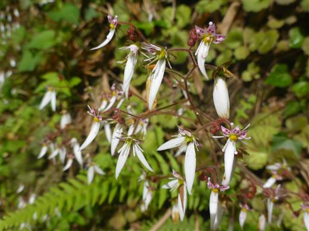
この辺りは茶畑が広がっている。
放置されて繁茂している茶畑も多い。
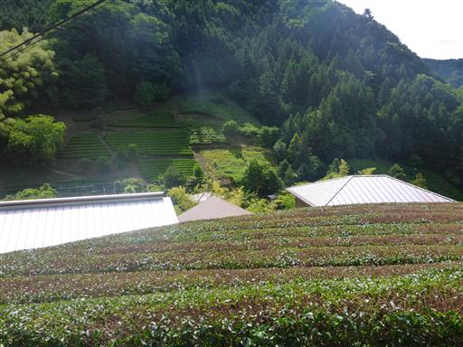
きれいなヘビイチゴ。
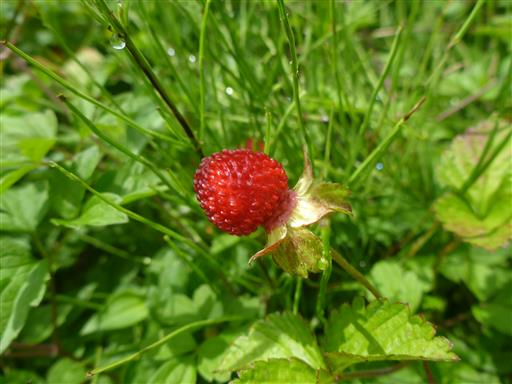
何かの卵だろうか？ドラム缶に白い塊が見える。
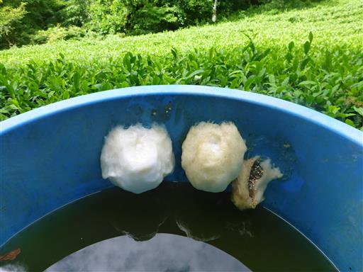
休憩所に続く道は畑の中にある。私道なのだろうか？
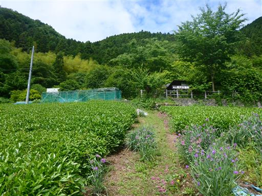
県立鎌沢休憩所に到着。小さなトイレがある。
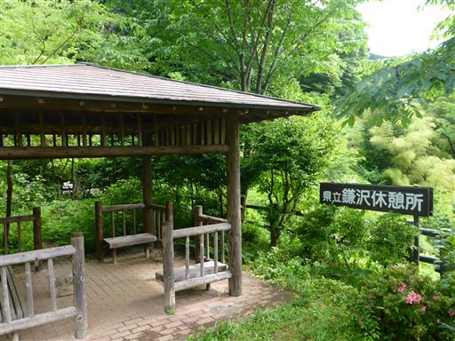
ここから息子は歩き出す。
最近新調した登山靴を履かせているが、大きくて重くて歩きにくそうだ。
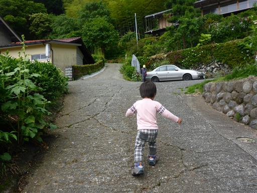
車道を40分歩いてようやく登山口に到着する。
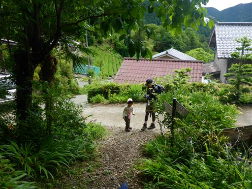
周囲は美しい竹林だ。
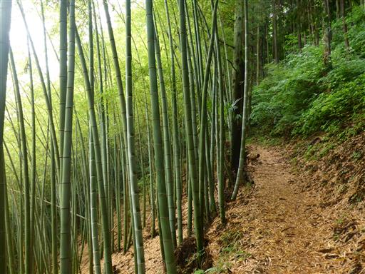
今日は雲が多い。山頂に着いても展望は期待できなさそうだ。
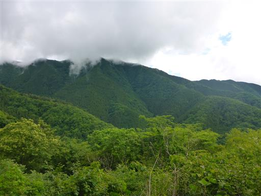
登山道に入っても息子は元気に歩いている。
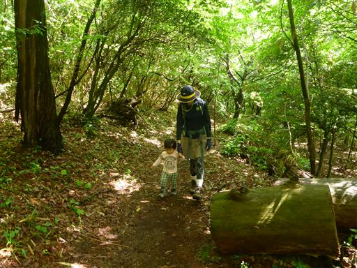
美しい樹林帯。新緑の季節はとっくに終わり、濃い緑に包まれている。
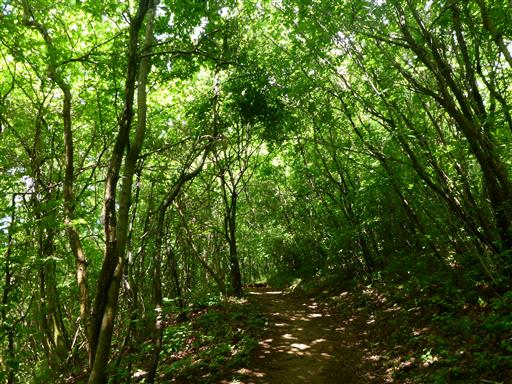
子供たちは実を拾って遊んでいる。こうなると全く前に進まない。
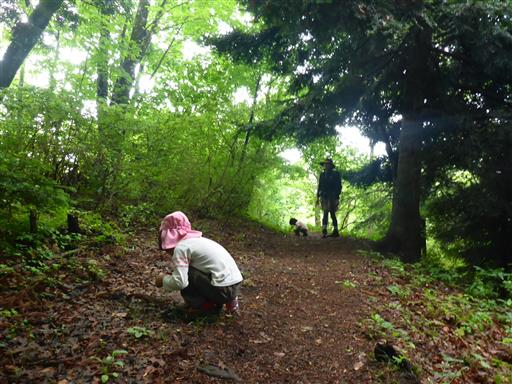
小さな神社に到着する。
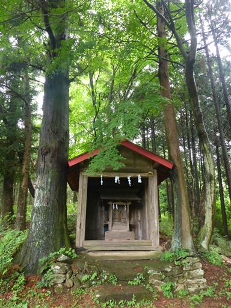
緩やかな尾根のため、平らな道が多い。
藪もあまり無く、歩きやすい道が続く。
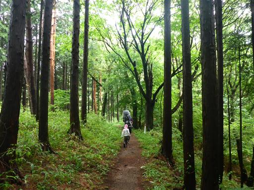
甘草水前の広場に到着。
甘草水の見学は行わず、そのまま山頂を目指す。
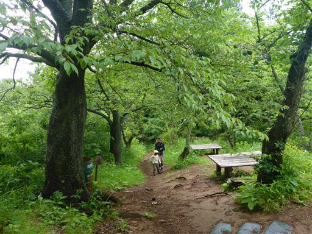
生藤山の最後は急斜面の登りだ。
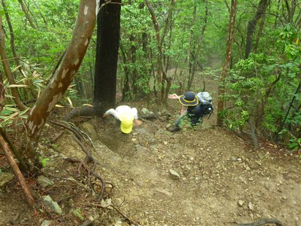
生藤山に到着する。標高990m。
狭い山頂で少々混雑気味だ。
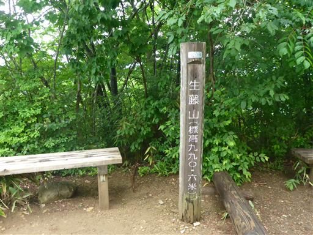
展望は少しだけ。遠くにある富士山は全く見えない。
少し狭いがここで昼食をとることにする。
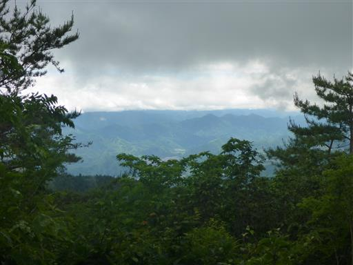
昼食をとったらお隣の三国山に移動。
ここは東京、神奈川、山梨の県境だ。
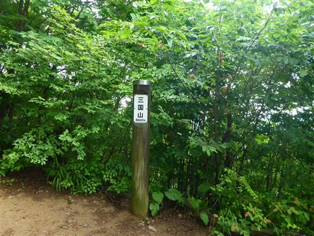
ここからも展望が少しだけ広がる。
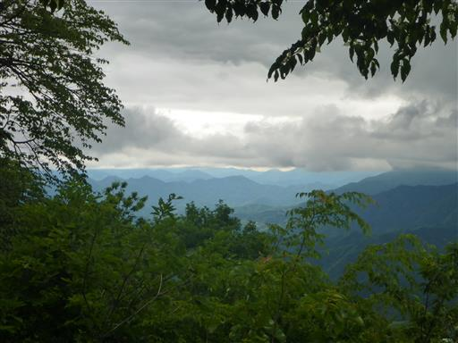
下山を開始する。
息子は甘草水でキャリアから下り、登山口まで頑張って歩いた。
曇り空の中での地味な山の登山だったが、久々に体を動かすことができた。
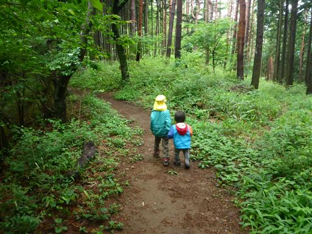